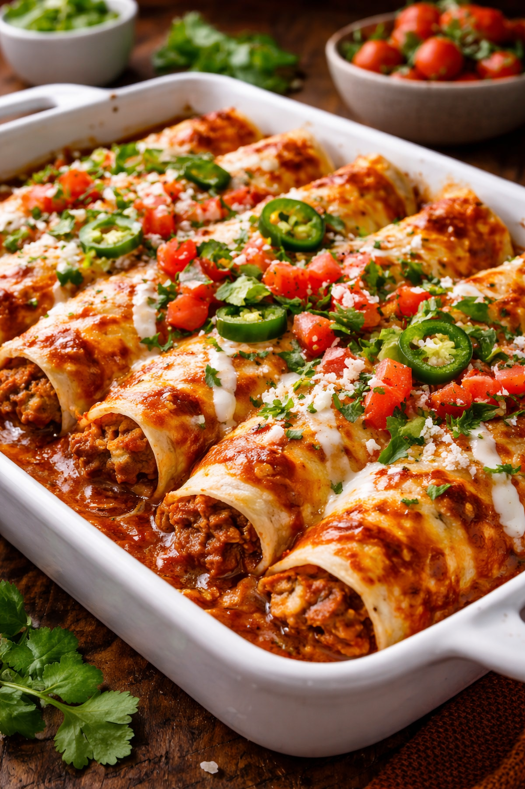

Enchiladas

Finished Enchiladas
A classic mexican dish, delicious and spicy!
Ingredients:
Tortillas & Filling
- Corn tortillas
- Cooked shredded chicken or ground beef
- Onion
- Garlic
- Oil for frying
Red Enchilada Sauce
- Dried guajillo chiles
- Dried ancho chiles (optional)
- Tomato
- Garlic
- Onion
- Cumin
- Mexican oregano
- Salt
- Chicken broth
Toppings
- Queso fresco or cotija cheese
- Mexican crema
- Fresh cilantro
- Avocado
Steps:
- Remove stems and seeds from the dried chiles and place them in hot water for about 10 minutes to soften.
- Blend the softened chiles with tomato, garlic, onion, cumin, oregano, salt, and chicken broth until smooth to make the red enchilada sauce.
- Heat a small amount of oil in a pan and lightly fry the corn tortillas for a few seconds on each side to soften them.
- Fill each tortilla with shredded chicken or ground beef and roll them tightly.
- Place the rolled tortillas in a baking dish.
- Pour the red enchilada sauce evenly over the enchiladas.
- Bake in a preheated oven at 180°C (350°F) for about 15–20 minutes until heated through.
- Remove from the oven and top with queso fresco or cotija cheese, Mexican crema, cilantro, and avocado before serving.